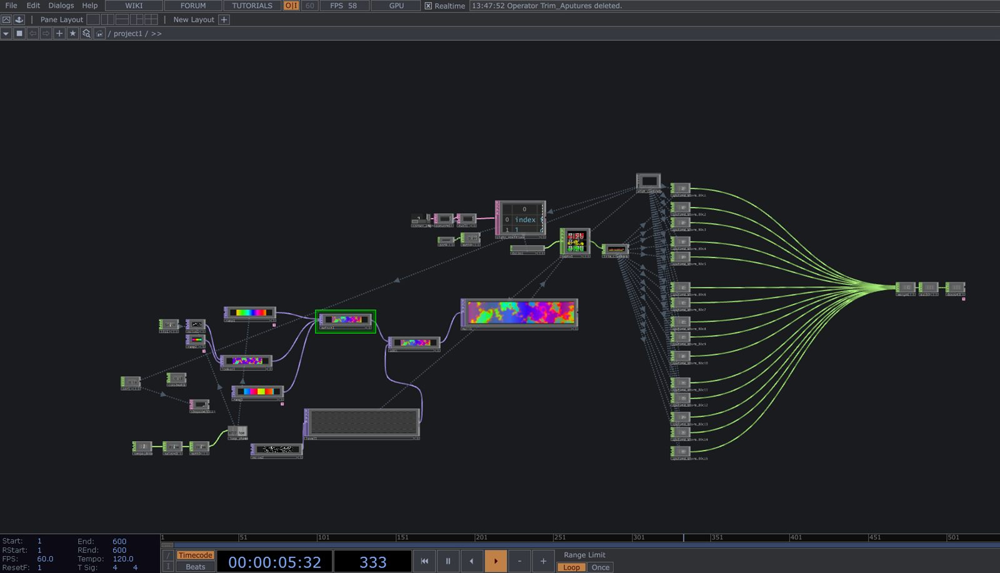

A lighting installation that covers the NYC AIDS Memorial in pixel-mapped
animation, turning the whole structure into one cohesive, art-directable light show
Role
Lighting designer & programmer
Tools
TouchDesigner · DMX · MIDI
Venue
NYC AIDS Memorial — Pride Open House
The memorial as a canvas
I was the lighting designer and programmer for the NYC AIDS Memorial Pride Open House. Fifteen
DMX-controlled lights hit every beam of the Memorial, all mapped and controlled with pixel animations in
TouchDesigner so the whole memorial lit up as one piece.
Treating the whole memorial as one canvas allowed me to run different Pride-inspired animations across it. These were all created using the Texture Operator family within TouchDesigner.

Behind the scenes — the TouchDesigner network mapping each fixture by angle